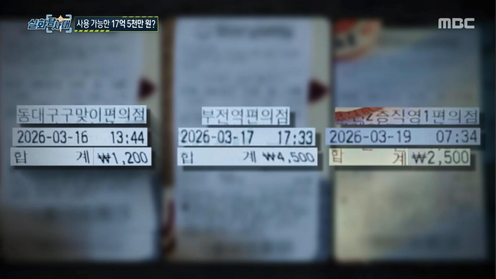
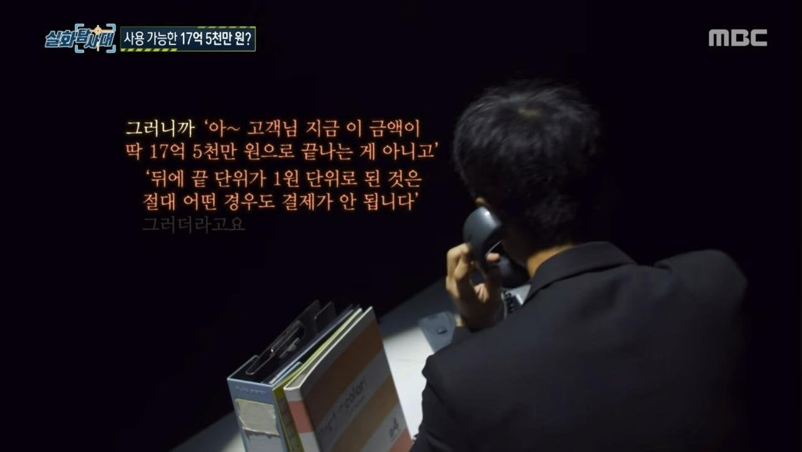
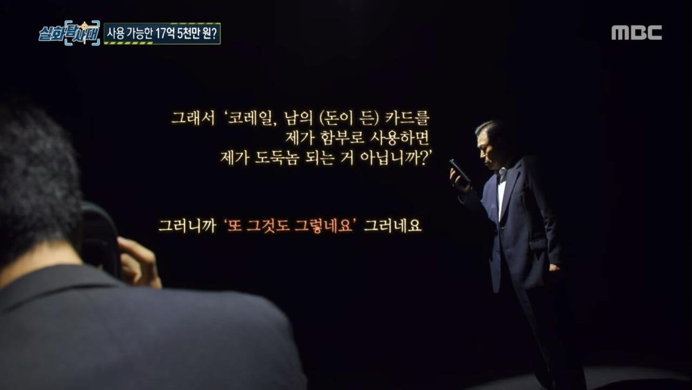
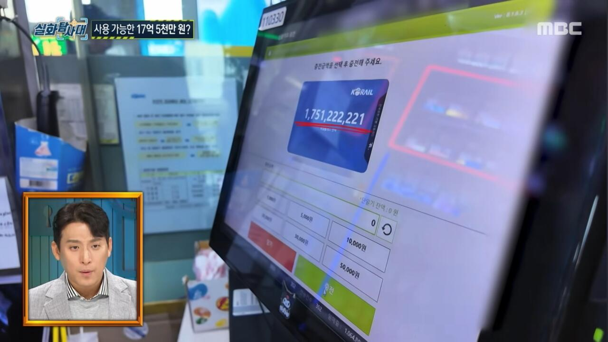
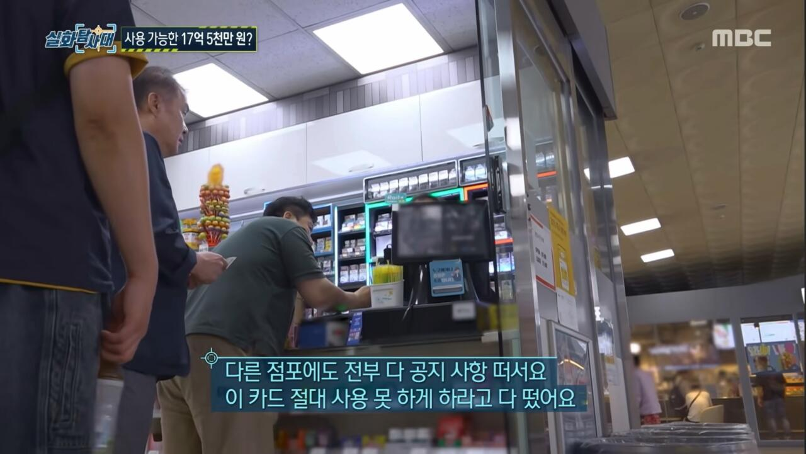

2022년에 구매한 레일플러스 교통카드 잔액을 확인하던 중 17억 5,122만 3,221원이 찍혀 있는 걸 발견함
처음에는 단순한 시스템 오류인 줄 알았는데 몇 년 뒤 이 카드로 실제 결제가 가능한 가맹점까지 있다는 사실을 확인
단순 오류라고 하기에는 금액이 너무 큼
고위직 관계자들이 비자금이나 탈세 등에 활용하려고 만든 일종의 백도어 아니냐는 말까지 나옴
2022년 죽어있는 카드 아무거나에
회계상 빵꾸난 17억 얼마 카드 예치금 충전 계정으로 돌려넣어서 매꿔넣고 회계마사지 할라했는데
아저씨가 언론에 들쑤시고 다니는 상황이라면?